01
Video editing
Organising raw footage, sequencing, transitions and synced sound in Premiere Pro, then storytelling through pacing, montage and juxtaposition.
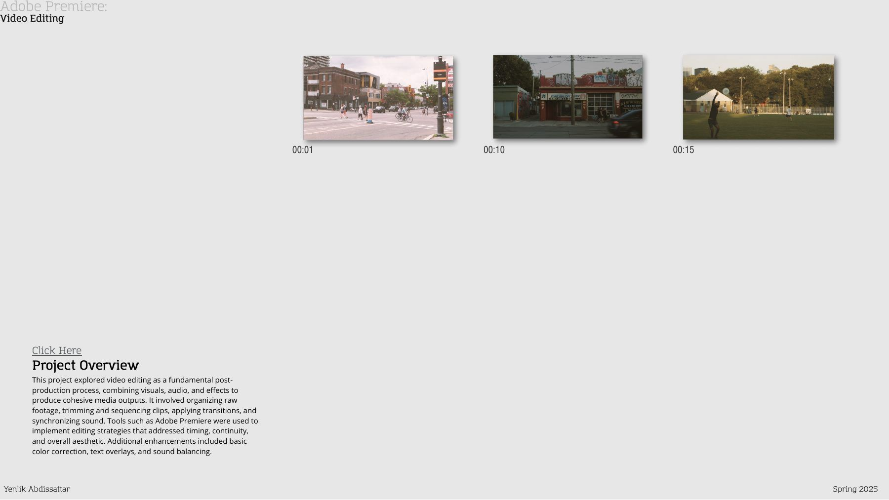
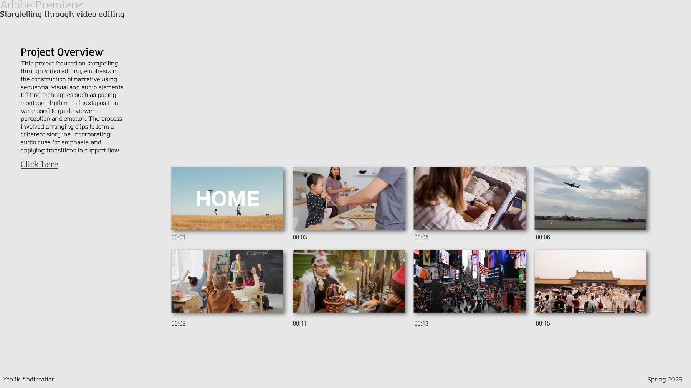
Film, 3D, game, real-time and AI
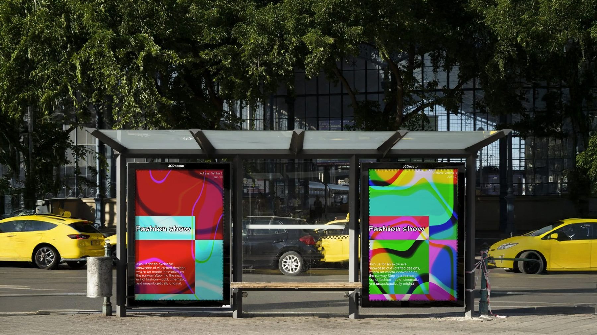
Overview
One semester across nine tools: video editing, 3D modelling, game design, real-time visuals in TouchDesigner, and AI-generated audio, image and video.
Brief
Learn each tool through a small finished piece, then bring them together in a midterm and a final project.
Approach
Each exercise ends in a working output: an edit, a modelled and animated spaceship, a playable game, generative posters and audio-reactive visuals.
Organising raw footage, sequencing, transitions and synced sound in Premiere Pro, then storytelling through pacing, montage and juxtaposition.


A spaceship in Blender, from basic forms through extrusion, subdivision, materials and lighting, then animated.
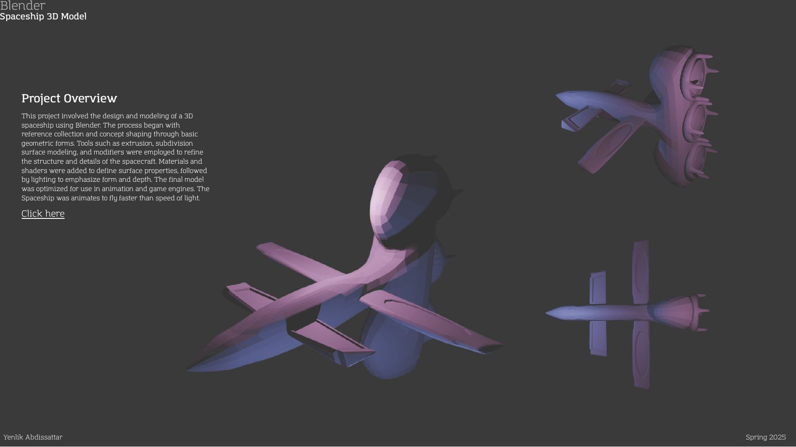
A Unity environment with terrain, lighting and audio, and a third-person jumping game with physics and camera tracking.
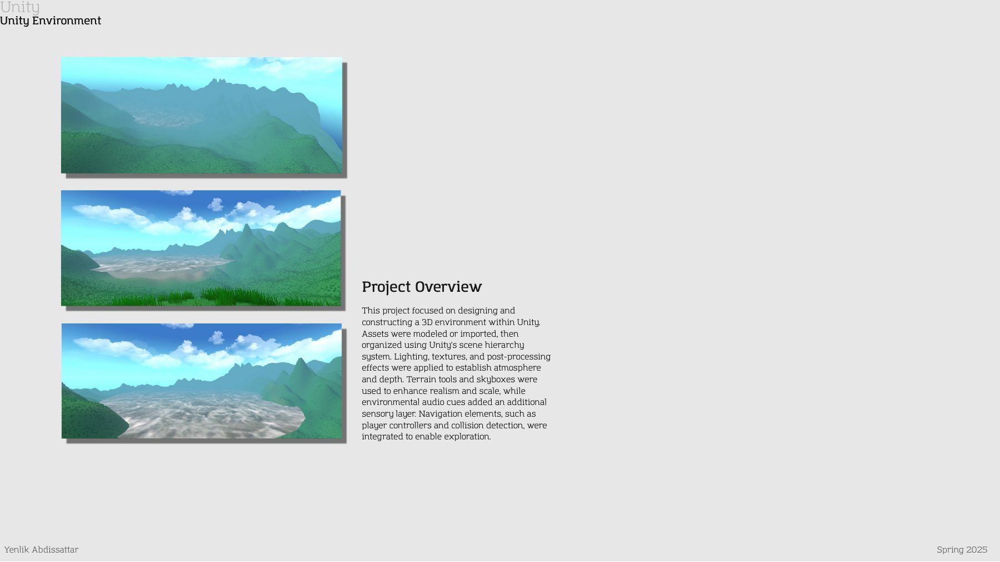
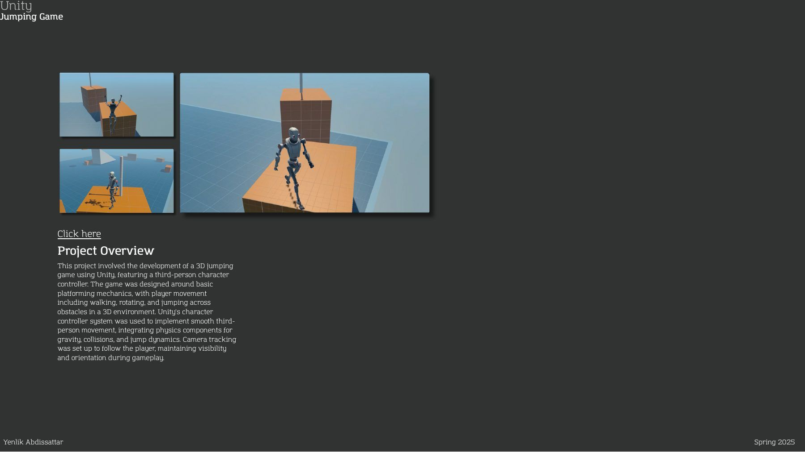
Premiere Pro and Unity combined in one project.
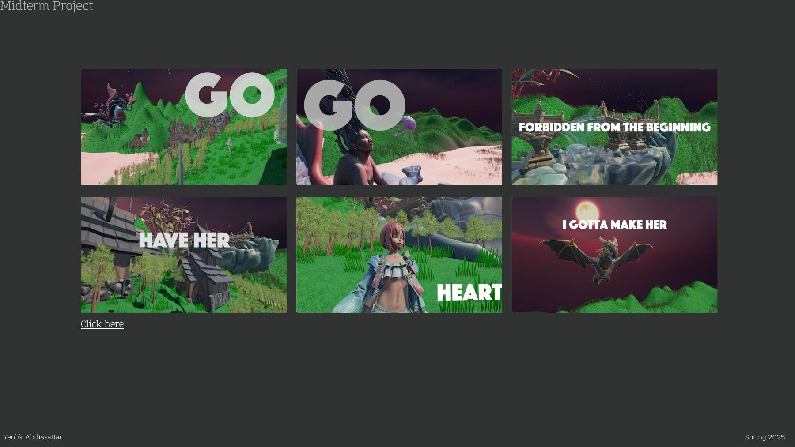
Real-time image and video edits through TOPs and CHOPs, audio-reactive visuals and generative posters.
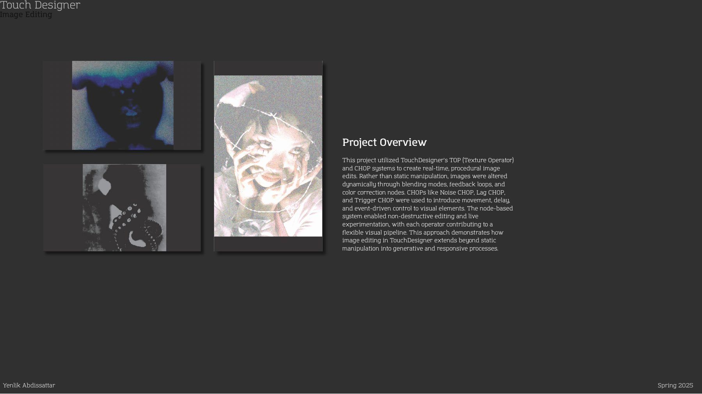
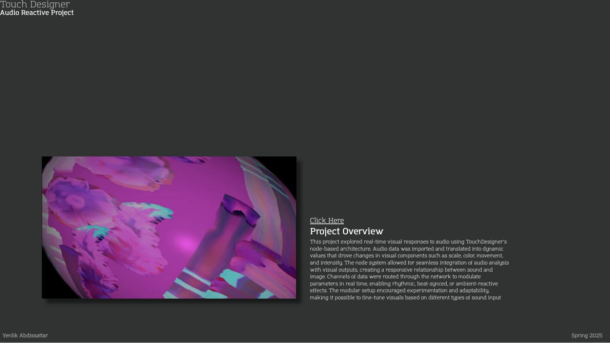
Prompted music in Suno and Udio, images in Hugging Face and video in RunComfy.
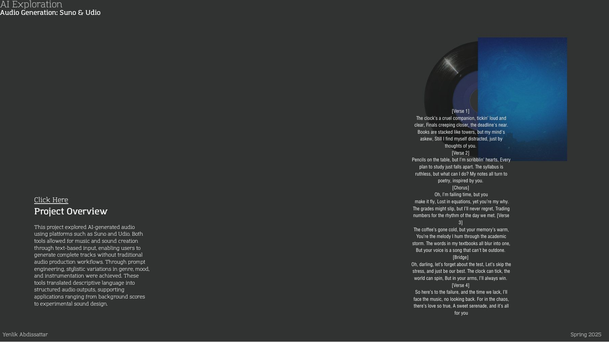
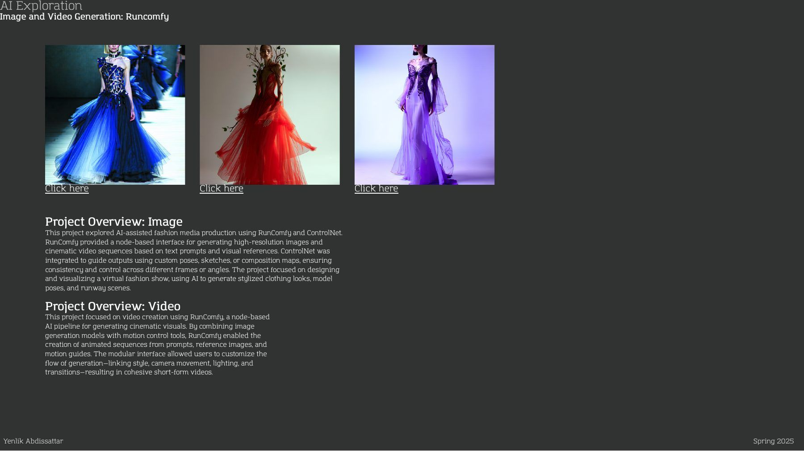
TouchDesigner, Premiere Pro and RunComfy together.
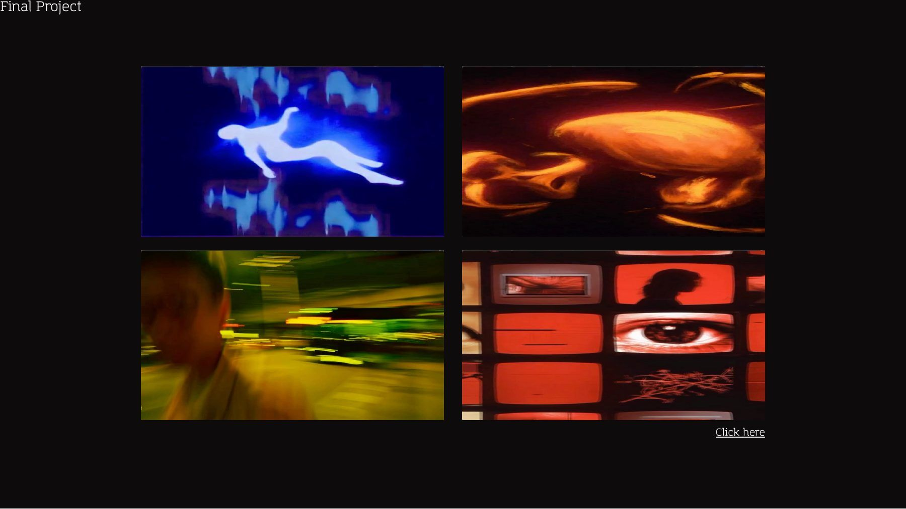
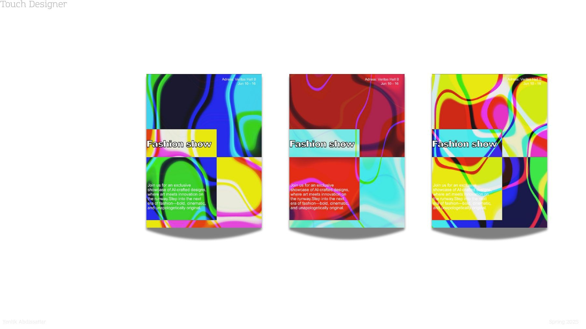
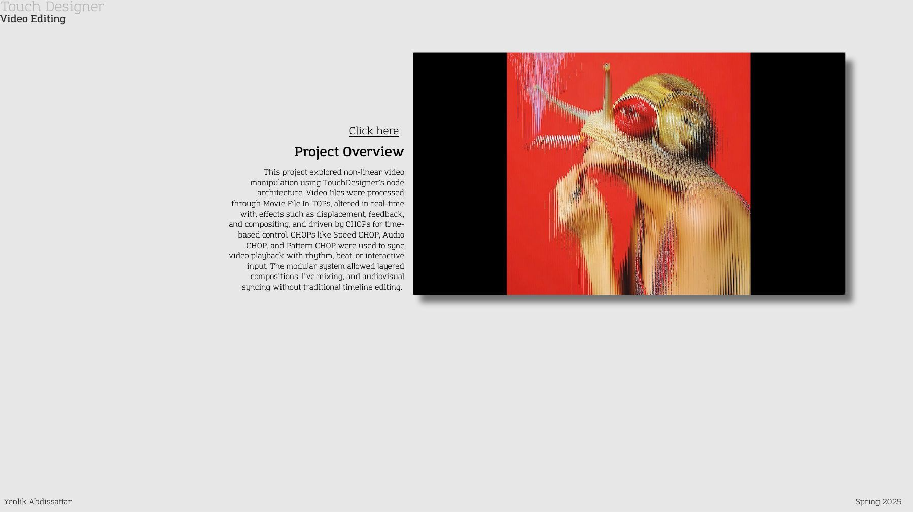
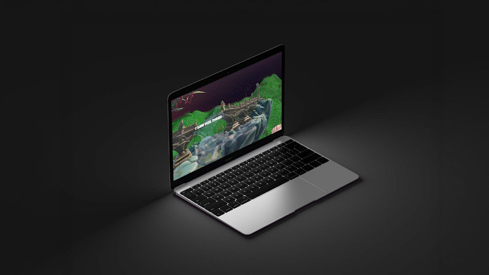
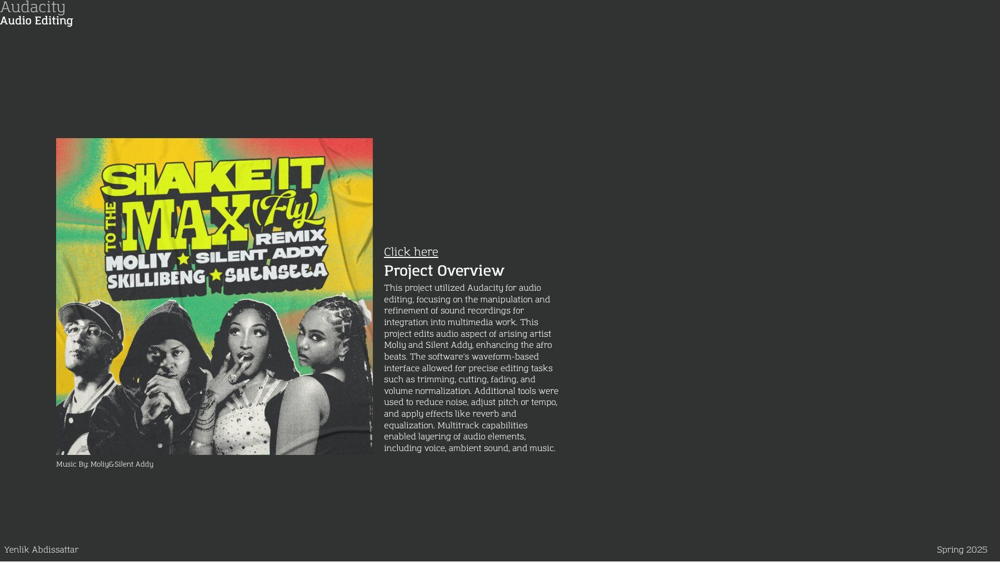
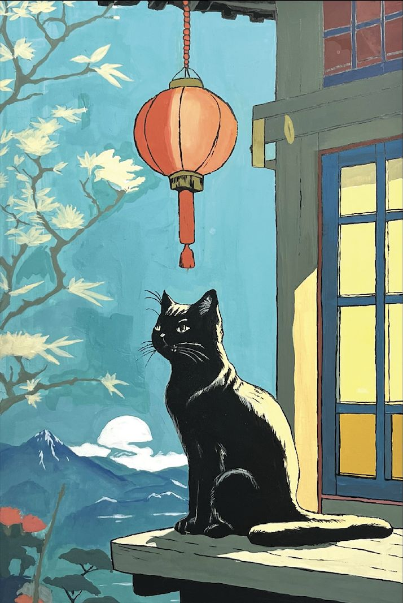
Next, 12
Colour Design